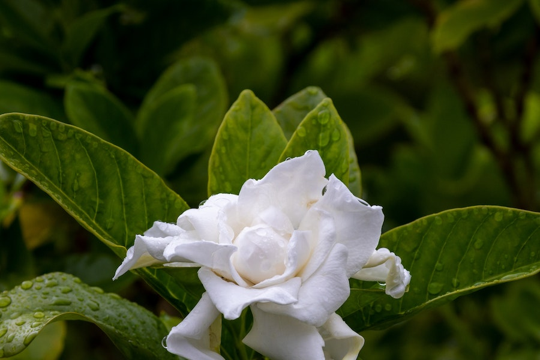
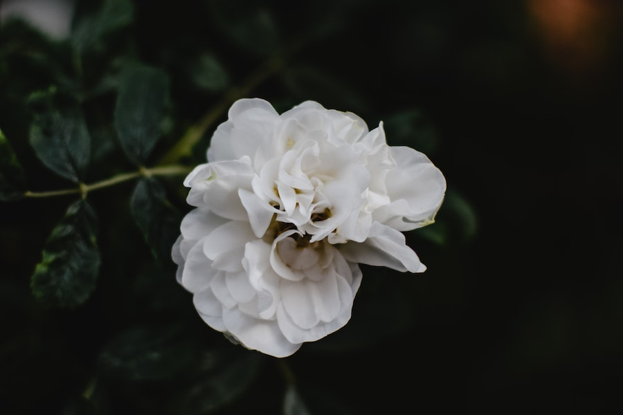

Imagens




A gardenia é uma flor nativa das regiões tropicais e subtropicais da Ásia, África, Madagascar e Oceania. Ela é conhecida por sua fragrância intensa e flores brancas ou amareladas.
As gardenias são arbustos perenes que produzem flores brancas ou amareladas com pétalas de aparência cerosa. Elas são apreciadas por sua fragrância doce e forte.
A gardenia é famosa por sua fragrância única e agradável. Seu perfume é frequentemente usado em perfumaria e produtos de cuidados pessoais.
Além de serem usadas em arranjos florais, as gardenias também são usadas para extrair óleos essenciais e fragrâncias para perfumes, sabonetes e velas.
Os preços das gardenias podem variar dependendo da região e da demanda. Em geral, você pode encontrar buquês de gardenias em floriculturas por preços que variam de R$ 30 a R$ 80 ou mais, dependendo do tamanho e da quantidade.
As gardenias são plantas que exigem cuidados específicos. Elas preferem sol parcial e solo ácido e bem drenado. Além disso, o controle de pragas e a poda regular são importantes para mantê-las saudáveis.
Existem várias variedades de gardenias, cada uma com suas características específicas. Algumas das variedades mais conhecidas incluem Gardenia jasminoides e Gardenia thunbergia.
As gardenias são frequentemente associadas à pureza, amor secreto e admiração. Elas são usadas em ocasiões especiais, como casamentos e aniversários, para expressar sentimentos de carinho e apreço.